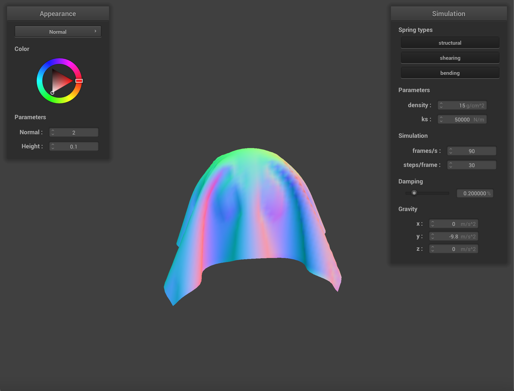
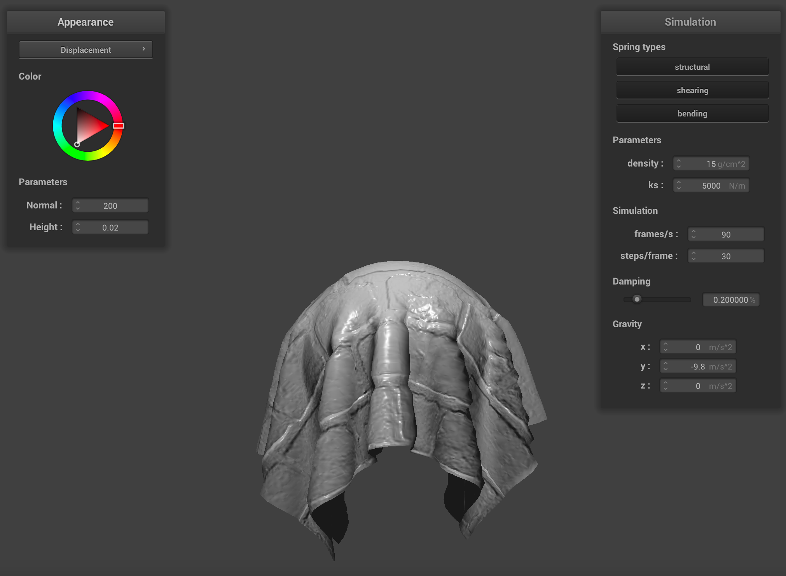

Assignment 4: Cloth Sim
Young Hoon Kang and Jeremy Ahn
Part 1: Masses and Springs
|
No shearing, Just shearing, No constraints
|
Part 2: Simulation Via Numerical Integration
|
This is the shaded cloth in its resting state with the regular parameters
|
|
If we decrease the constant ks, the cloth becomes more bouncy and drops to a deeper level, as you can see in the picture to the left above. Increasing ks causes the cloth to become less bouncy and barely drops down to its resting state, as you can see in the picture above to the right.
|
|
If we decrease the density, the same effect happens if we increase ks: the cloth becomes less volatile, as you can see in the picture above to your left. If we increase the density, the same effect happens if we decrease the ks: the cloth becomes more prone to rebound, as you can see in the picture above to your right.
|
|
If we increase the damping, the cloth seems to have air resistance and falls to its resting state a lot slower, with its resting state shown in the picture above to the left. It also seems to have a similar effect of blowing up a balloon. If we decrease the damping, the cloth becomes much more volatile and appears restless, as you can see in the picture above to the right.
|
Part 3: Handling Collisions With Other Objects
|

Left: 500ks, Middle: 5000ks(default), Right: 50000ks
As you can see, as we decrease the ks to 500, there are more folds and the piece of cloth looks much more thin and draped down and as we increase the ks to 50000, the piece of cloth looks more stiff and unwilling to fall fully onto the sphere.
|
Part 4: Handling Self-Collisions
|
This is the behavior of the cloth as falls and folds on itself.
|
|
Regular cloth behavior at its early state when density is 15g/cm^2 and ks is 5000 N/m.
If we increase just the density to 1500000 g/cm^2 then you can see that there are a lot more folds within the piece of cloth as it falls, creating much more self collisions as it falls.
The same effect as increasing the density is seen as we decrease the ks. When I left density as is and decrease the ks to 5 N/m, a lot more self collisions and folds are portrayed.
|
Part 5: Shaders
Shader program is a program used to render graphics at some stage of a graphic processor. They are isolated programs that run in parallel on the GPU, executing sections of the graphics pipeline, taking in an input, and outputting a single 4 dimensional vector. Vertex and fragment shaders work to create a smoother graphic image by breaking segments of the image into smaller bits so that fragment shader can process these small segments and rasterize a much smoother and accurate image output.
Blinn-Phong shading is a method of shading that is expensive, but allows the calculation of the dot product between the viewer and light beam. This calculation is done on each vertex.
|
Above we see our Blinn-Phong output as just the ambient component, the diffuse component, the specular component, and lastly our entire model, respectively.
|
|
We used an among us custom texture and got the above texture mapping shader(right picture).
|
|
Bump Mapping on Cloth and Sphere
Displacement Mapping on Sphere
|
Because displacement modifies the position of vertices to reflect the height map in addition to modifying the normals so it would be consistent with the new geometry, we detect small but noticeable edges that add detail to our sphere in displacement compared to bump.
|
Bump Mapping on Sphere(16 vs 128)
Displacement Mapping on Sphere(16 vs 128)
Bump Mapping on Cloth on Sphere(16 vs 128)

Displacement Mapping on Cloth on Sphere(16 vs 128)
|
When we changed the coarseness from 16 to 128, we noticed very minimal changes between the two spheres. We did observe more jagged edges when doing displacement which lead to more details when the cloth did cover the sphere. We also observed more fine detail on the 128 bump compared to 16, but we found it to be very small and hard to notice.
|
Above we see our mirror shader on the cloth(left picture) and on the sphere(right picture).
|
Web Page
Link is : https://cal-cs184-student.github.io/sp22-project-webpages-jimkang126/